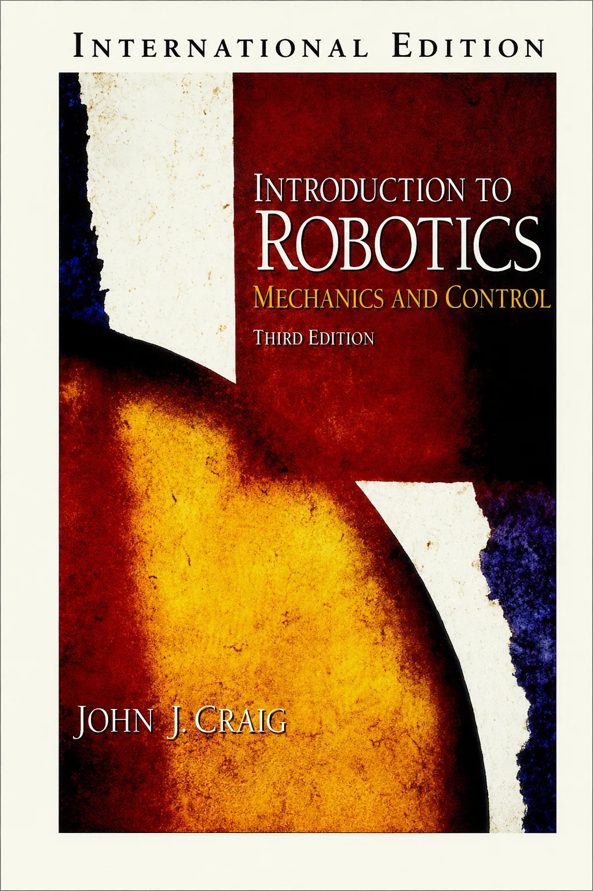
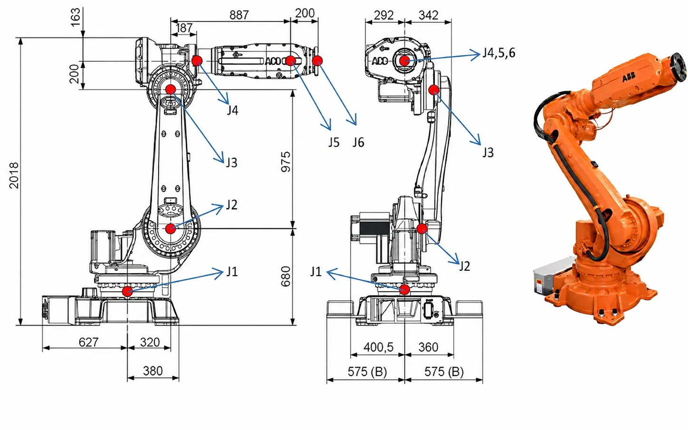
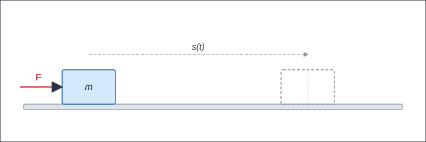
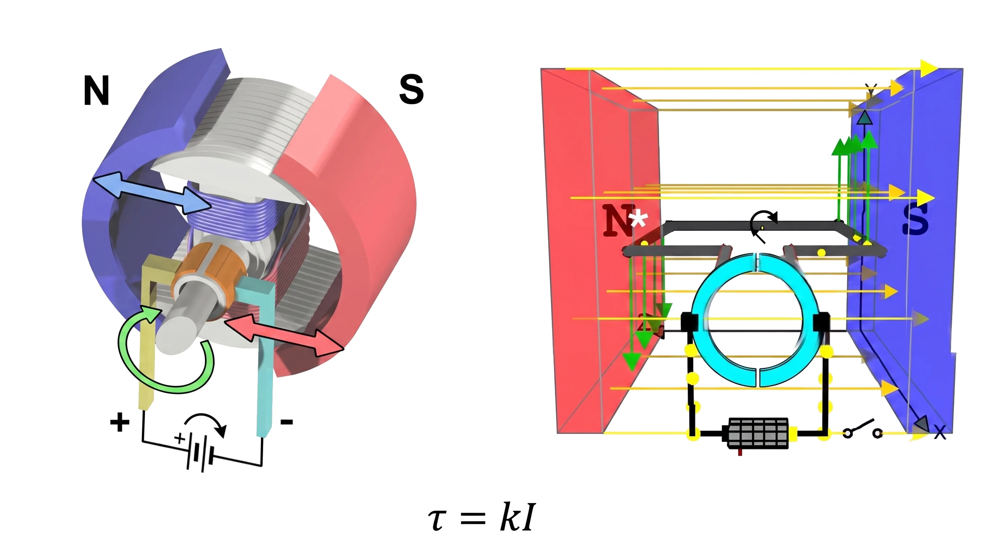
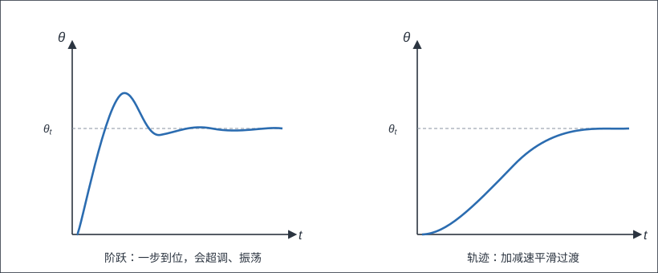
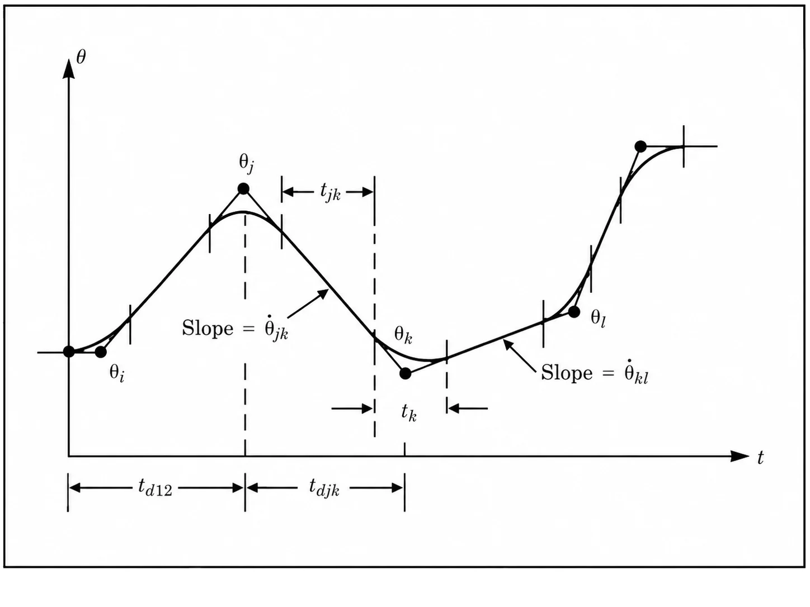
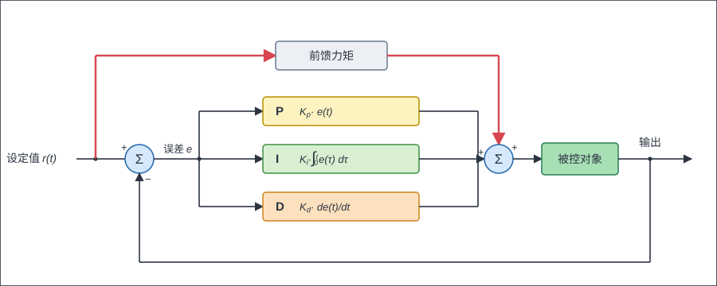
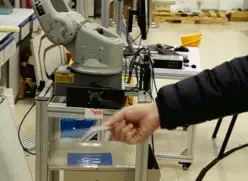
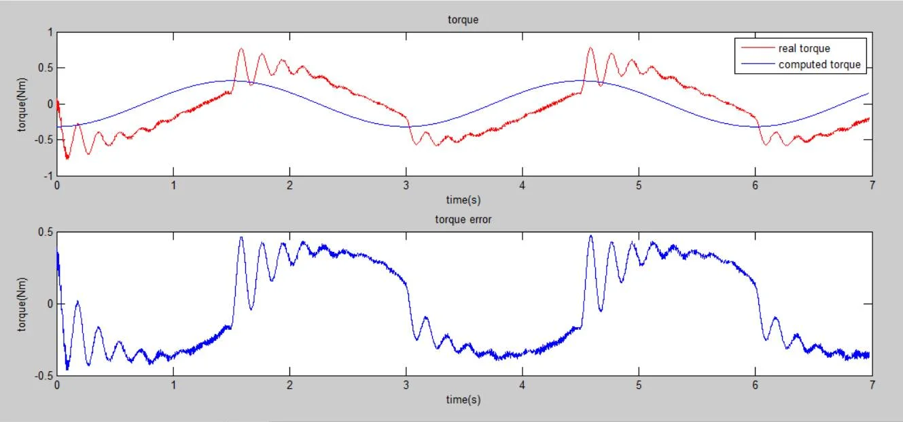

Introduction to Robotics¶
The introductory part really comes down to understanding how to make a robot arm move. This area is already very mature — a textbook from last century will do. My personal pick is John Craig's Introduction to Robotics: Mechanics and Control[1]. On YouTube and Bilibili (in Chinese) you can find videos by Stanford's legendary Oussama Khatib, which line up closely with Craig's book.
{kind=link}

It's a widely used introductory text, easy to find through a library or the usual booksellers. As an introduction it's remarkably approachable, and paired with Khatib's videos you can get a fast grip on the fundamentals of robotics.
Back when I was doing my PhD, I used to tell the incoming junior students, "If you master what's in this book, you're already ahead of most of the senior students in the lab."
Not many actually got through it, though.
So let me put it a different way: "If you master what's in this book, you'll be well equipped for development work at most industrial-robot companies in China."
Here I'll roughly lay out the basics; time is limited, so I won't expand on them too much for now. The order may not exactly match Craig's book.
Spatial transformations¶
If you did well in theoretical mechanics, this part won't give you much trouble. The problem is, some didn't.
Homogeneous transformations and the like are very basic and very important in robotics. Some things to watch for:
-
Get comfortable with the notation: the pose of frame {B} expressed in frame {A} is \({^A_B}T\) (there are other conventions too; just get fluent in one);
-
The difference between left-multiplying and right-multiplying a matrix;
-
Understand what each column of a rotation matrix means, and learn to write down the rotation matrix between two frames "by eye";
-
Ways to represent orientation: RPY angles, the various Euler angles, angle-axis, and rotation matrices. Beyond what's in the book, take a look at quaternions while you're at it, and understand gimbal lock for Euler angles (only once you know the trouble with a three-parameter orientation will you readily accept something new like quaternions);
-
If you can, try to understand how angular velocity is defined and computed.
Kinematics¶
{kind=link}

For a robot, one basic task is computing kinematics:
- Forward kinematics: given the joint angles, compute the pose of the robot's tool frame (the end-effector) in the robot's base frame.
- Inverse kinematics: given a target end-effector pose, compute the joint angles that achieve it.
Earlier, you learned that a 4×4 matrix can describe the relationship between two frames. For forward kinematics, if we know the coordinate transform between each pair of adjacent links, we can compute the final end-effector pose by matrix multiplication.
To make the relative pose between two links easier to compute, you'll need to learn a modeling method called DH. In short: you set up a coordinate frame at each joint by a fixed set of rules, and each frame is then pinned down by four numbers (the DH parameters).
Of course, a quick search will show you there are several flavors of DH — Standard DH, Modified DH, and so on.
That doesn't matter. All you need to know is that it helps you pin down the relative relationship between two links. You may as well just learn the one in Craig's book (Wikipedia calls it Modified DH):

1) Set up the frames:
-
The \(z_i\) axis coincides with joint \(i\), with the positive direction of rotation following the right-hand rule;
-
\(x_i\) lies along the common perpendicular of \(z_i\) and \(z_{i+1}\): \(x_i = z_i \times z_{i+1}\). If the two \(z\) axes are parallel, point \(x_i\) from \(z_i\) toward \(z_{i+1}\);
-
With the \(x\) and \(z\) axes fixed, the right-hand rule gives the \(y\)-axis direction.
-
Besides the frame rigidly attached to each joint, you may also attach two extra frames — one to the robot base {B} and one to the end tool {E}.
2) Compute the DH parameters:
-
\(a_i\) is the distance along \(x_i\) from \(z_i\) to \(z_{i+1}\);
-
\(\alpha_i\) is the angle about \(x_i\) from \(z_i\) to \(z_{i+1}\);
-
\(d_i\) is the distance along \(z_i\) from \(x_{i-1}\) to \(x_i\);
-
\(\theta_i\) is the angle about \(z_i\) from \(x_{i-1}\) to \(x_i\).
3) Compute the transformation matrix:
4) Forward solution:
5) Inverse solution:
It comes down to repeatedly shuffling the positions of the matrices above (left- and right-multiplying) to find an unknown you can solve for on its own. It's a bit tedious, but every beginner must derive the inverse-kinematics formulas for a classic six-axis arm by hand, and implement it in code.
The Jacobian¶
The Jacobian matrix \(J\) is a very important thing in robotics. It relates the robot's joint velocities \(\dot{q}\) to the end-effector velocity \(\dot{x}\):
-
If you didn't get angular velocity straight earlier, think it through carefully here. For instance: "Why can't you just differentiate the Euler angles to get velocity?";
-
Understand the book's way of computing the Jacobian, and think about "Can you just take partial derivatives of the forward-kinematics result?" (see my Zhihu answer, What is the orientation vector in robot differential kinematics?, in Chinese)
-
What you need to master here is how to compute it — you must compute the robot's Jacobian in code;
-
If you use Matlab or Python, you can use their symbolic-computation tools to check the questions above, and deepen your understanding of angular velocity;
-
(PS: it's perfectly normal not to have an intuitive grasp of orientation and angular velocity, because they don't live in Cartesian space — you'll only truly understand once you learn more math later.);
-
If you know the principle of virtual work, you'll also realize the Jacobian relates end-effector forces to joint torques (very useful later for things like force control).
Now that you have the Jacobian, you'll notice you know how to control the end-effector's motion by adjusting the angles. Let's look again at the inverse-kinematics problem. You'll realize: "Can't I just move the robot's end-effector toward the target pose?"

Here the end-effector pose error is \(\Delta x = x - \hat{x}\); invert the Jacobian to get joint increments, then keep iterating:
Yes — this is the numerical approach to robot kinematics, and you can use it to write a general-purpose solver. For details, see my Zhihu answer, How does the MATLAB Robotics Toolbox compute inverse kinematics? (in Chinese).
Every beginner should implement this algorithm by hand; there are a few subtle failure modes you only run into once you've built it yourself.
The method is elegant, but it has its own problems:
- It's slow — it needs many iterations;
- It returns only one solution at a time;
- The result and speed depend heavily on the choice of initial value;
- It may hit singularities and fail to converge.
While you're at it, take a look at the singularity problem, and understand that a singularity is a property tied to the robot's configuration — you can't get rid of it through modeling.
Dynamics¶
I'm convinced 80% of readers give up at this chapter.
Take Newton-Euler recursion as an example. The forward iteration (i: 0 → n−1) works outward link by link, computing each link's velocity, acceleration, and inertial force/torque:
The backward iteration (i: n → 1) passes forces/torques back inward link by link, and pulls out each joint torque:
The dynamics of a multi-axis robot look extraordinarily complicated, whether you use Newton-Euler or Lagrange. And if you didn't learn theoretical mechanics well beforehand, you'll basically be crawling.
So personally, I think it's enough to get a basic concept of this part for now; you don't need to grab six-axis dynamics by the horns just yet:
-
Be able to compute a three-axis arm's dynamics model using the Lagrange method (three axes is within acceptable reach);
-
Compute a three-axis arm's dynamics model using Newton-Euler, and be sure to implement it in code (because at high degrees of freedom, Newton-Euler is easier to implement in code; if you do dynamics work in the future, you'll more likely use Newton-Euler than Lagrange);
-
Understand the physical meaning of things like moment of inertia (during that coding, questions will surely come up — e.g., the reference-frame issue for angular velocity and moment of inertia);
-
Get a rough sense of what robot dynamics is made of (the form of the equations, link dynamics, joint dynamics, gravity, joint friction, motor dynamics, and so on).
Control¶
By now we have all sorts of tools for solving the robot's kinematics; we know the joint angles that bring the robot to any given state. But how do we actually get those joints to move?
First, remember that everyday life is still governed by Newtonian mechanics.
To make something move, you have to apply a force to it.
{kind=link}

If we specify a motion trajectory \(s(t)\) for a sliding block, we can compute the acceleration \(\ddot{s}(t)\) over the whole trajectory, and from there the force \(F(t) = m \cdot \ddot{s}(t)\) needed to make the block move as we intend.
In other words, we can use dynamics to compute the joint torque needed to move the robot.
And joint torque can be provided by a motor — for a DC motor, output torque is proportional to current.
{kind=link}

But there are a few problems:
-
Dynamics is really hard to compute;
-
The dynamics parameters are really imprecise (how am I supposed to know each link's mass? moment of inertia is hard to measure, joint friction is hard to compute);
-
And there may be all kinds of external forces (the mass of a grasped object, changing joint-dynamics properties, and so on).
That's the job of the control algorithm. And so you meet the famous PID controller. It works on the error between the target position and the current actual position to produce a control output. Intuitively: if the position is too high, I command it downward; if the speed is too high, I command it to slow down; if there's an error, I keep adding control output in the direction that shrinks the error. It doesn't rely on a precise model — simple and effective, and for a while it was the universal answer in industrial control.
But another problem: if we send the joint's target position straight to the PID controller, every command is a sudden jump (a step response). Real-world hardware has inertia, so that kind of jump easily causes overshoot, oscillation, and the like.
{kind=link}

But something still feels off — a robot's motion seems to have an acceleration/deceleration process (right) rather than a single step (left).
So here we need to bring in the idea of "trajectory planning": based on the motor's performance, design a relatively smooth accel/decel trajectory to reach the target position, cutting down the step size in each control cycle. This gives us the so-called "trapezoidal profile" (continuous velocity), "S-curve" (continuous acceleration), and other trajectory profiles.
{kind=link}

Now it occurs to you: since both PID and dynamics can compute the force/control commands needed to move the robot — but the dynamics model isn't very accurate, while PID relies on error and always lags — could we combine the two? First use dynamics to compute a roughly accurate torque, then use PID to clean up the small residual error, instead of computing the whole deviation?
{kind=link}

Yes — and so you've invented dynamics-feedforward PID control.
At this point, we've basically gone through the important content in Craig's book. You can skim the remaining parts, since a fair amount is already somewhat dated.
Calibration and identification¶
This part isn't in Craig's book, but it's a key point for running industrial arms at high precision and high speed, and it's relatively mature, so I'm adding it in.
Earlier, we "invented" dynamics-feedforward PID control. It's easy to see that how well the feedforward works depends largely on whether your dynamics model is accurate — kinematic parameters, moments of inertia, center-of-mass positions... where do these numbers come from?
From the design drawings? Plenty of robot companies do exactly that, and most of the time it works better than PID without feedforward. But unfortunately, because machining and assembly always carry some deviation, the actual parameters don't match the drawings. Bringing the model close to the real machine is what calibration and identification are for. Textbooks tend to gloss over these two, but in real engineering you can hardly avoid them, so let me say a bit about them on their own. The good news: their playbook is highly consistent — build an error equation, then solve it with something like least squares.
Kinematic calibration. Take the classic "multi-point touch calibration" as an example: have the arm's end-effector touch the same fixed point over and over from different orientations. Taking that fixed point as the origin, set up a frame \(\{P\}\); then the end-effector position satisfies \({}^{P}p = f(q, \phi)\), where \(\phi\) is the full set of DH parameters. Since the end-effector is always in contact with the fixed point, we get an error equation:
where \(J\) is the Jacobian of \(f\) with respect to the parameters \(\phi\). Measure a few sets of data, solve iteratively with something like Gauss-Newton, and you have the robot's current kinematic parameters. Keywords like "robot kinematics calibration" turn up a mountain of literature.
Dynamics identification. A multi-axis robot's dynamics equations are complex, but they can be rearranged into a form that's linear in the parameters:
where \(\Theta\) is a set of parameter combinations to be identified (the base parameter set). See — this is the familiar \(Ax=b\), and least squares will solve it.
A few details in practice:
- The excitation trajectory can't be chosen carelessly; for example, for a planar arm with rotary joints, if the identification trajectory makes \(q_1=q_2\), you can't identify a valid value (the corresponding matrix isn't full rank);
- Angular velocity and angular acceleration can't be measured directly; you need a filtering algorithm or an observer to compute them;
- If you use a linear model for friction, you can fold it into the equation above and identify it too. For a systematic introduction, see Khalil's textbook Modeling, Identification and Control of Robots[2].
I've done this whole thing end-to-end on a single-axis direct-drive platform: reading the dynamics parameters straight out of SolidWorks, the computed torque was off from the measured torque by 50%; after parameter identification, the error immediately dropped to within 8%.

With an accurate dynamics model, the fun begins: without adding any sensor, you can estimate the external torque directly from the current fed back by the drive. How sensitive? Touch it with a sheet of paper and the arm stops. Once a collision is detected, switch to "gravity compensation + low-gain PD," and you have a collaborative robot's hand-guiding (teach by dragging). Later I did a whole-arm version on a Baxter. For the full experiment write-up, see I heard collaborative robots are hot these days, so I built 1/7 of one and I finished building the remaining 6/7 of the collaborative robot (both in Chinese).
{kind=link}

But before you eagerly go reproduce this on your own robot, a word of warning: friction — enter this rabbit hole at your own risk. The experiment above was a direct-drive platform, where friction can be ignored. Take the opposite extreme: a 100 kg load with an 86:1 planetary-gear reduction. Ignore friction and the dynamics model can't fit the torque curve at all; and even if you try to identify the friction, testing several empirical friction formulas, you still can't fully eliminate the error — to this day, we don't have a general, authoritative friction model.
{kind=link}

This is why quite a few collaborative robots (like the KUKA iiwa and Franka) choose to add torque sensors in the joints: measuring torque directly at the reducer's output, skipping the transmission and sidestepping friction. The specific schemes each have their trade-offs: strain-gauge type (like Kinova), dual-encoder type (estimating torque from the difference in rotation angle between the two ends of the reducer), and series elastic actuators (SEA, like Baxter); some makers (like UR) stick with the sensorless route of current estimation plus careful identification.
Finally: if you built a single-axis servo platform following the suggestion in the "Control" section, then all the experiments in this section — identification, collision detection, hand-guiding — can be reproduced on it, and I strongly recommend giving it a try. And once a robot is in continuous contact with its environment (grinding, assembly), collision detection alone isn't enough; you'll want to look into keywords like force control and impedance control — again, I recommend Khalil's textbook[2].
If hands-on experiments aren't an option for now, I strongly recommend a paper by Dragan Kostić that, using a three-DOF arm as its example, walks through in detail how to build and identify a high-precision robot model. The paper: Modeling and identification for high-performance robot control: An RRR-robotic arm case study.